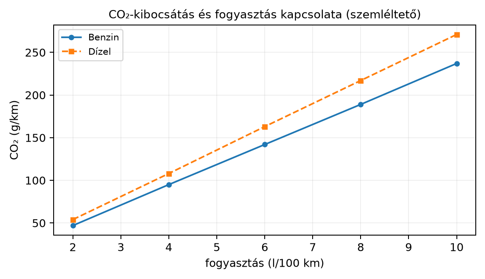

A műhelyben gyakori beszélgetés: az ügyfél megvesz egy használt autót, és azt kérdezi, hogy a járműve „Euro 6-os-e”, mert a belvárosi behajtási zónában csak ilyen autóval parkolhat. Egy másik ügyfél LPG-re szeretné alakíttatni az autóját, mert az gázüzemben olcsóbb, de nem tudja, hogy a 15 éves szívómotorja alkalmas-e rá, és milyen időszakos tartályvizsgálatot kell majd betartani. A szervizben ezek a kérdések akkor is előjönnek, amikor a műszaki vizsga előtt a környezetvédelmi felülvizsgálaton az emissziós értékeket nézzük, vagy amikor az AdBlue-rendszer hibáját keressük. Ebben az alfejezetben összekötjük a kipufogógáz-utókezelést a jármű hivatalos besorolásával, a fogyasztással és a tüzelőanyag-választással.
Képzeljünk el egy egyszerű grafikont, amelyen a vízszintes tengely a fogyasztás, a függőleges tengely pedig a szén-dioxid-kibocsátás. A benzin és a gázolaj eltérő meredekségű egyenest rajzol, mert a gázolaj sűrűbb és szénben gazdagabb, ezért literenként több CO₂ keletkezik. Ugyanakkor a dízelmotor fogyasztása gyakran alacsonyabb, így a valós kibocsátás a két hatás eredője. A grafikonról leolvasható, hogy egy 6 l/100 km-es benzines autó nagyjából 140 g/km CO₂-t, míg egy ugyanilyen fogyasztású dízel nagyjából 160 g/km CO₂-t bocsát ki.

A későbbi fejezetekben, például a vizsgafelkészülés során ezt a „Euro-osztály, tüzelőanyag, fogyasztás” összefüggést kell majd szakszerűen elmagyaráznunk.
Definíció. Az Euro-norma a közúti járművek típusjóváhagyásához előírt kipufogógáz-kibocsátási osztály, amely az adott járműkategóriára meghatározza a szén-monoxid (CO), a szénhidrogén (HC), a nitrogén-oxidok (NOₓ), a részecsketömeg (PM) és – az újabb osztályoknál – a részecskeszám (PN) határértékeit. A jármű forgalmi engedélye és a gyártói adattábla jelöli az emissziós besorolást.
Összefüggés. A tüzelőanyag elégetésekor az üzemanyagban lévő szénből szén-dioxid (CO₂) keletkezik. Közelítőleg:
ahol a keletkező CO₂ tömege, az elégetett tüzelőanyag térfogata, a tüzelőanyag sűrűsége, a széntartalom tömegaránya, pedig a CO₂ és a szén móltömegének aránya. Fogyasztásra vetítve:
ahol a fogyasztás l/100 km-ben, az eredmény pedig g/km-ben adódik. Benzinre tipikusan és , így a szorzó per l/100 km. Gázolajra és , így a szorzó per l/100 km. Ez közelítés, nem hatósági mérési eljárás.
Szabály. A CO₂-kibocsátás nem azonos az Euro-normában szabályozott károsanyag-kibocsátással: a CO₂ az üvegházhatású gázok közé tartozik, és a fogyasztással arányos, míg a CO, HC, NOₓ és PM lokális légszennyezők, amelyeket a motor és az utókezelés csökkent.
Előírás. Az EU típusjóváhagyás keretében a motoroknak meg kell felelniük a hatályos Euro-kibocsátási osztálynak; a forgalomba helyezéshez és a forgalomban tartáshoz a jármű környezetvédelmi besorolása szükséges (ellenőrizendő: a hatályos alaprendelet, pl. (EU) 2018/858 és a kibocsátási végrehajtási rendeletek). A laboratóriumi WLTP- és a valós vezetési RDE-vizsgálat összekapcsolása a típusjóváhagyás része; a határértékek és az alkalmazási időpontok gyakran változnak (ellenőrizendő: a mindenkori hatályos Euro-osztály).
Környezetvédelem. A használt motorolaj, a tüzelőanyag maradéka, a gáztartályok eltávolítása és a hűtőfolyadék veszélyes hulladék. A hibás lambdaszonda, a kiürült AdBlue-tartály, a katalizátor vagy a részecskeszűrő kiiktatása jogellenes és a levegőminőséget rontja; a szervizben csak szakszerű javítás végezhető.
Az Euro-normák a kezdetektől fokozatosan szigorodtak. Az első osztályok (Euro 1–2) elsősorban a CO és HC határértékét csökkentették, és kötelezővé tették a szabályozott katalizátort a benzinmotoroknál. Az Euro 3–4 megjelenése az EOBD rendszerrel és a dízelek NOₓ- és részecske-kibocsátásának korlátozásával járt. Az Euro 5–6 korszakban a dízelmotoroknál a részecskeszűrő, majd a NOₓ-csökkentő utókezelés (NSC vagy SCR) vált gyakorlatilag általánossá. A jelenlegi, szigorított Euro 6d és az arra épülő további szakaszok a valós közúti mérésekre is hangsúlyt helyeznek (ellenőrizendő: a hatályos fázisnevek és az Euro 7 átmenet időpontja).
A diagram logaritmikus skáláján jól látszik a nagyságrendi csökkenés: a dízel NOx-határ Euro 3-tól Euro 6-ig kb. a hatodára (0,50 → 0,08 g/km), a részecskehatár Euro 1-től Euro 6-ig kb. a harmincad részére (0,14 → 0,0045 g/km) csökkent (ellenőrizendő). Euro 1–2-nél még csak HC + NOx összegkorlát volt. Ez magyarázza, miért vált a DPF Euro 5-től, a NOx-utókezelés (SCR vagy NSC) Euro 6-tól gyakorlatilag általánossá. A HTML-változatban a benzines értékek és a lineáris skála is megjeleníthető.
A régi, kizárólag laboratóriumi NEDC-ciklust a WLTP (Worldwide harmonized Light vehicles Test Procedure) váltotta fel, amely nagyobb sebességeket, gyorsabb gyorsulásokat és reálisabb üzemállapotokat használ, ezért ugyanarra a járműre általában magasabb CO₂- és fogyasztásértéket ad, mint a NEDC. Az RDE (Real Driving Emissions) vizsgálat közúton, hordozható mérőrendszerrel (PEMS) ellenőrzi a NOₓ- és részecske-kibocsátást; ezzel a laboratóriumi trükközés nehezebbé vált. A haszonjárművek és nehéz tehergépkocsik motorjaira külön Euro I–VI osztályokat írnak elő, eltérő vizsgálati ciklusokkal (WHSC, WHTC – ellenőrizendő: pontos jelölés).
A műhelyben a legfontosabb, hogy a jármű azonosító okmányaiból és az adattáblából olvassuk ki a környezetvédelmi besorolást. Magyarországon a forgalmi engedélyben az uniós V.9 rovat a környezetvédelmi kategóriát (Euro-osztályt) adja meg, a hazai környezetvédelmi osztály-kód pedig számmal jelöli a besorolást (ellenőrizendő: a pontos rovat és a kódtábla a hatályos jogszabály szerint). A katalógus- és típusadatokból a motor és az utókezelő rendszer felépítése is a besoroláshoz köthető.
A CO₂-kibocsátás nem része a klasszikus Euro határértékeknek, hanem az éghajlatvédelem és az energiapolitika területén külön szabályozzák. Az új személygépkocsikra az EU flottaszintű CO₂-célértéket ír elő, amelyet a gyártóknak a járműpark átlagára kell teljesíteniük; az érték évtizedről évtizedre csökken, a túllépés pedig bírságot von maga után (ellenőrizendő: a mindenkori célszám és az ösztönző/bírság rendszer). Ezért a gyártók a fogyasztást csökkentő hibrid, részleges hibrid és elektromos hajtások felé mozdultak el, és a jármű fedélzeti számítógépe is pontosan méri a fogyasztást.
Számítás. A fenti képlet szerint:
Például benzinre a szorzó per l/100 km, gázolajra per l/100 km.
Példa. Egy benzines autó fogyasztása 5,8 l/100 km. A közelítő CO₂-kibocsátása:
Példa. Egy dízelautó CO₂-kibocsátása 118 g/km. A közelítő fogyasztása:
A két példa a számítás menetét mutatja (a két autó nem összehasonlítható). Azonos CO₂-kibocsátáshoz dízelből kevesebb liter elég, mert a gázolaj literenként több szenet tartalmaz (27,1 vs. 23,65 g/km per l/100 km).
Az alábbiakban a leggyakoribb alternatív gáz- és folyékony tüzelőanyagok műhelyi szempontból legfontosabb jellemzőit foglaljuk össze.
| Tüzelőanyag | Tárolás / nyomás | Jellemző előny | Jellemző hátrány / kockázat |
|---|---|---|---|
| LPG (autógáz) | cseppfolyós, kb. 8 bar | alacsonyabb ár, kisebb CO₂- és részecske-kibocsátás (ellenőrizendő) | sűrűbb gőz, mélygarázs-korlát, tartályvizsgálat |
| CNG (földgáz) | sűrített gáz, 200 bar | nagy oktánszám, alacsony CO₂/energia | nagy nyomás, nagy tartály, kisebb hatótáv |
| Bioetanol (E10/E85) | folyékony, benzinhez keverve | megújuló, magas oktánszám | anyagkompatibilitás, hidegindítás |
| Biodízel (FAME) / HVO | dízelhez keverve vagy tisztán | megújuló, kevesebb korom | üzemanyag-rendszer-kompatibilitás, oxidáció |
| Hidrogén (cellás vagy égetésű) | sűrített gáz (350–700 bar) vagy folyékony | lokálisan nulla CO₂ | tárolás, töltőinfrastruktúra, érzékeny technológia |
| Szintetikus üzemanyag | folyékony, mint a benzin/dízel | a meglévő motorokban változtatás nélkül használható (drop-in), megújuló elv | gyártási energiaigény, költség |
Megjegyzés. A táblázat minőségi, tanulási áttekintés; a tárolási nyomások és a kompatibilitási előírások a gyártó és a hatályos szabályozás szerint változnak (ellenőrizendő).
Az LPG (autógáz) propán-bután keverék, amely a tartályban cseppfolyós állapotban, kb. 8 bar nyomáson van. A rendszer fő elemei: a tartály (általában a pótkerék helyén vagy a padló alatt), a tartálycsonkon lévő biztonsági mágnesszelep és túlfolyásgátló, a párologtató-nyomáscsökkentő, valamint a gázbefecskendező szelepek. A folyékony gáz a párologtatóban gáz halmazállapotúvá válik, nyomása csökken, majd a motor elektronikus vezérlője a gázadagolót úgy szabályozza, hogy a keverék összetétele a benzinüzeméhez hasonló legyen. A modern, soronkénti LPG-befecskendezés pontos üzemanyag-elosztást biztosít, és motorhiba esetén automatikusan visszakapcsol benzinre.
Figyelem. Az LPG-gőz nehezebb a levegőnél, ezért zárt, rosszul szellőző helyen, mélygarázsban vagy aknában felgyűlhet; szivárgás esetén robbanásképes keverék alakulhat ki. Gáztartály bontása, hegesztése vagy javítása tilos; az LPG-tartályt a hatályos előírások szerint időszakosan nyomáspróbával és szemrevételezéssel kell vizsgálni (ellenőrizendő: a hazai időszakos vizsgálati gyakoriság és tartalmi követelmények).
A sűrített földgáz (CNG) elsősorban metán, amelyet a jármű tartályában 200 bar körüli nyomáson tárolnak. A motor oldalán nagy nyomású, többlépcsős nyomáscsökkentő csökkenti le a befecskendezők számára megfelelő értékre. A metán nagy oktánszáma miatt a motor nagyobb sűrítési aránnyal vagy feltöltéssel üzemelhet, de az átalakítatlan benzinmotor csak csökkentett teljesítménnyel használja. A CNG-tartályok nagyobb helyet foglalnak, a hatótáv általában kisebb, mint benzin- vagy LPG-üzemben.
Figyelem. A CNG-tartály nagy nyomású, ezért sérült vagy korrodált tartályt, csővezetéket és nyomáscsökkentőt soha ne javítsunk házi módszerrel. A földgáz könnyebb a levegőnél, ezért zárt műhelyben felfelé szellőzik; a szivárgás robbanásveszélyes, a tartályvizsgálatot a hatályos nyomástartó edény-előírások szerint kell végezni (ellenőrizendő: időszakosság és vizsgálóhely).
Az LPG-rendszerben a tóruszalakú tartály multiszelepéből a cseppfolyós gáz a párologtató-nyomáscsökkentőbe jut, ahol a hűtővíz hője elpárologtatja; a gáz innen a gázszűrőn át a gázbefecskendezőkhöz kerül. A CNG-rendszerben a nagynyomású tartályokból a tartályszelepen és a nagynyomású vezetéken át a többlépcsős nyomáscsökkentő adja a gázt a befecskendezőknek. A HTML-változatban a két rendszer között át lehet váltani, és rámutatásra megjelenik az elemek neve.
A bioetanol erjesztésből származó etil-alkohol, amelyet benzinnel kevernek. Az E10 jelölés legfeljebb 10% bioetanolt tartalmaz; a jármű töltősapkáján vagy a kezelési útmutatóban jelölik, hogy a motor engedélyezett-e E10-re. A régebbi, tömítéseiben és üzemanyagcsöveiben nem ellenálló járműveken az E10 magasabb oldószerhatása szivárgást, a vízmegkötő hajlama pedig korróziót okozhat. Az E85 rugalmas üzemű (flex fuel) járművekhez való, és jelentősen magasabb etanoltartalma miatt hidegindítási segédlete szükséges.
A biodízel (FAME) növényi olajokból vagy állati zsírokból készült metil-észter, amelyet dízelhez kevernek. A HVO (hidrogénezett növényi olaj) kémiailag tisztább, nagy cetánszámú, jól keverhető hagyományos gázolajjal, és kevesebb lerakódást okoz. A dízel befecskendező rendszerek anyagkompatibilitása és az üzemanyagszűrő gyakoribb cseréje miatt a gyártó engedélyét mindig ellenőrizni kell.
A hidrogén tüzelőanyag-cellás járműben elektromos áramot termel, vagy belső égésű motorban elégethető; lokálisan nulla CO₂-kibocsátású. A tárolás 350–700 bar nyomáson vagy folyékony hidrogénként történik, ezért a rendszer anyagai, a tömítések és a szivárgásérzékelők kritikusak. A hidrogén rendkívül széles gyúlékonysági tartománya miatt a gyártói szivárgásvizsgálat és a szellőztetés kiemelt munkahelyi követelmény.
A szintetikus üzemanyagok (e-fuels, PtL) megújuló villamos energiából készült, a hagyományos benzinnel vagy gázolajjal elegyíthető folyékony tüzelőanyagok. Előnyük, hogy a meglévő járműparkban szinte változtatás nélkül használhatók, de a gyártás energiaigénye és költsége jelenleg magas. A gyártói jóváhagyás és a szabvány szerinti minőség itt is elsőbbséget élvez.
A műhelyben az emissziós besorolást és a tüzelőanyag-kompatibilitást az alábbi lépésekkel ellenőrizzük:
A gyártói javítási utasítások és a hatályos műszaki vizsga-előírások itt is elsőbbséget élveznek.
Egy használtautó-vásárlás előtti műhelyi átvizsgáláson az ügyfél 2007-es dízel személygépkocsit hozott. A forgalmi engedély szerint a környezetvédelmi besorolás „Euro 4” volt. A város, ahová az ügyfél naponta bejárna, a behajtási zónában Euro 5 vagy magasabb osztályt írt elő (a behajtási feltétel helyi rendeletben szerepel – ellenőrizendő). A diagnosztikai műszerrel kiolvastuk a motorkódokat, és megállapítottuk, hogy a jármű nem rendelkezik gyári részecskeszűrővel, a NOₓ-tároló katalizátora pedig öreg. Az ügyfélnek elmagyaráztuk, hogy a jármű nem felel meg a zóna követelményének, és a besorolás nem változtatható meg egyszerű szereléssel, mert a típusjóváhagyáshoz kötött; osztálymódosítás csak a hatóság által elfogadott, típusjóváhagyott utólagos rendszerrel és a hatóság eljárásában lehetséges (ellenőrizendő). A tanulság: a műszaki vizsgán az emissziós mérés a régi, kisebb osztályú járműnél is sikeres lehet, de a behajtási korlátozás külön szabály.
Egy másik esetben egy 2003-as benzinmotoros autó tulajdonosa E10-es benzint tankolt, amitől a tüzelőanyag-szintadó tömítése megduzzadt és enyhe szivárgás jelentkezett. A gyártói anyagkompatibilitási lista szerint a típus nem volt E10-re engedélyezett. A javítás során a tüzelőanyagrendszer érintett rugalmas elemeit E10-álló változatra cseréltük, és az ügyfélnek javasoltuk, hogy csak E5-ös benzint tankoljon.
Cél: annak megállapítása, hogy a jármű mely Euro-osztályba tartozik, és mely tüzelőanyagokat szabad használni.
Jármű- és adatazonosítás: rendszám, alvázszám, motorszám; a forgalmi engedély emissziós rovata (ellenőrizendő: rovatjelölés); a gyártói típusadat.
Szükséges eszközök: diagnosztikai rendszerteszter, zseblámpa, digitális fényképezőgép vagy telefon, a gyártói online szervizadatbázis elérése, szivárgáskereső spray gázüzemű járműhöz.
Biztonsági korlát. A feladat tanműhelyi környezetre, oktató felügyeletére és a gyártói javítási utasítás betartására vonatkozik; a megadott értékek tanulási példák. Gáztartályos járművön a gázrendszer bontását csak arra jogosított és a tartályvizsgálati előírásokat ismerő személy végezheti.
Munkalépések:
Ellenőrzési pontok: a gyártói adathoz képest az utókezelő elemek azonosíthatók; a rendszerteszter nem jelez emissziós hibakódot; a readiness-monitorok kész állapotúak; a tartályvizsgálati matrica a hatályos határidőn belül van (ellenőrizendő: gyártói adat / hatályos előírás).
Tipikus hibák: a környezetvédelmi osztály összekeverése a CO₂ értékkel; a tüzelőanyag-jelölés figyelmen kívül hagyása; a gáztartály-vizsgálat elmulasztása.
Önellenőrzés – válaszok
1. feladat (A). Határozd meg, mit jelöl az „Euro 6d” a személygépkocsiknál, és mi a lényegi különbség a laboratóriumi WLTP és az RDE között.
2. feladat (A). Számítsd ki egy 4,9 l/100 km fogyasztású dízelautó közelítő CO₂-kibocsátását g/km-ben.
3. feladat (B). Egy CNG-üzemű autó 5,2 kg földgázt fogyaszt 100 km-en. A földgáz sűrűsége normál állapotban kb. 0,72 kg/m³, fűtőértéke kb. 45 MJ/kg. A benzin sűrűsége 0,75 kg/l, fűtőértéke 32 MJ/l. Hány liter benzin energiaegyenértékének felel meg a 100 km-re eső CNG-fogyasztás?
4. feladat (B). Rajzold le egyszerű kapcsolási vázlaton az LPG-rendszer fő elemeit: tartály, mágnesszelep, párologtató/nyomáscsökkentő, gázadagoló, befecskendezők, motorvezérlő. A testpont és a biztonsági vezeték is szerepeljen.
5. feladat (C). Egy 2009-es, Euro 5 besorolású dízel autó AdBlue-rendszere hibás, és a műszerfalon a „NOx-hiba – indítás letiltva” üzenet jelenik meg. Elemezd, mi történhet, ha valaki a rendszer tesztelését megkerülve a motorvezérlő szoftverét „kiürítésre” módosítja, és milyen szervizkövetkezményei lehetnek.
6. feladat (D). Egy LPG-üzemű autó motorja meleg üzemben, gázüzemben rángat, benzinüzemben hibátlan. Sorold fel a lehetséges okokat a rendszer elemei szerint, és írd le, milyen méréseket végeznél a hibakeresés során.
1. feladat. Az Euro 6d a személygépkocsik hatályos, szigorított kibocsátási osztálya, amely már a valós közúti mérési konformitási követelményeket is tartalmazza (ellenőrizendő: a fázis pontos elnevezése és a határértékek). A WLTP laboratóriumi ciklus, amely a görgős fékpadon meghatározott sebesség-idő profilt követ; az RDE közúton, PEMS-műszerrel mér, ezért a valós forgalmi helyzetekben is ellenőrzi a NOₓ- és részecske-kibocsátást.
2. feladat. Adott: , dízel szorzó per l/100 km. Keresett: . Képlet: . Behelyettesítve: , kerekítve . Ellenőrzés: a 4,9 l/100 km dízel reális, a CO₂ 130–140 g/km nagyságrendjébe esik.
3. feladat. Adott: CNG-fogyasztás , fűtőérték , benzin fűtőérték . Keresett: benzin-egyenérték literben. Képlet: energia = . Benzin térfogat: . A CNG-autó 100 km-re 5,2 kg földgáz elfogyasztása tehát körülbelül 7,3 l benzin energiájának felel meg.
4. feladat. A diagram szöveges leírása: a rajz bal
oldalán az LPG-tartály, alatta a mágnesszelep; a tartályból folyékony
gáz vezet a párologtató-nyomáscsökkentőbe, amelynek hűtőköréből
motorhűtőfolyadék melegíti. A nyomáscsökkentő után gáz halad az
elosztóhoz, onnan a soronkénti gázbefecskendező szelepekhez a
szívócsőbe. A motorvezérlő az akkumulátor és a gyújtáskapcsolás felől
kap táplálást, és testpontra van kötve. A mágnesszelep relén keresztül
kapcsol be, az ütközésérzékelő vagy a gyújtás kikapcsolása megszakítja.
A testpont 31, a gyújtás 15, az akkumulátor
30 kapocsjelöléssel szerepel.
5. feladat. Ha a jármű AdBlue- vagy SCR-rendszere hibás, a motorvezérlő szoftveresen letiltja az indítást, hogy ezzel kényszerítse ki az utókezelő javítását. A rendszer kiiktatása vagy a szoftver módosítása jogellenes, a jármű elveszíti a típusjóváhagyási konformitását, a NOₓ-kibocsátás megnő, a hatósági RDE-mérésen elbukhat, és a gyártó garanciális/szavatossági felelőssége is megszűnik. A szerviznek a hibakód alapján az AdBlue-szivattyút, a befecskendezőt, a hőmérséklet- és NOₓ-érzékelőket, a vezetékeket és a kivezető katalizátor állapotát kell vizsgálnia, majd a javítás után a rendszerteszterrel el kell végezni az adaptációt és az emissziós readiness futásokat.
6. feladat. Lehetséges okok: az LPG gázadagoló vagy befecskendező szelep hibája meleg üzemben, a párologtató-nyomáscsökkentő elégtelen fűtése vagy a membrán repedése, a gázszűrő szennyeződése, a mágnesszelep vagy a tartálycsonk szivárgása, a motor elektronikus vezérlőjének hibás gázüzemű feltöltése, valamint a gyújtás szikraköz túl nagy, ami gázüzemben nehezebben gyújt. Mérések: először OBD-kiolvasás, az üzemanyag-trimmek és a lambdaszonda jelének ellenőrzése benzin- és gázüzemben; gáznyomás mérése a nyomáscsökkentő után, a párologtató hőmérsékletének mérése, a befecskendező szelepek ellenállásának és működtetésének vizsgálata, valamint a gázrendszer szivárgáskeresése. A hibás elemet a gyártói javítási utasítás szerint kell cserélni, és a javítás után a gázrendszer tömörségvizsgálatát és a próbaútját elvégezni.
Az Euro-norma a közúti járművek típusjóváhagyási kipufogógáz-kibocsátási osztálya, amely a CO, HC, NOₓ, PM és – újabb osztályoknál – a részecskeszám határértékeit szabja meg. A laboratóriumi WLTP és a valós vezetési RDE együtt ellenőrzi a kibocsátást; a WLTP a fogyasztást is reálisabban adja meg. A CO₂ nem része a klasszikus Euro-határértékeknek, hanem a fogyasztással arányos éghajlatvédelmi mutató: benzinre közelítőleg per l/100 km, gázolajra per l/100 km a szorzó. Az alternatív tüzelőanyagok közül az LPG cseppfolyós gáz kb. 8 bar nyomáson, a CNG sűrített földgáz kb. 200 bar nyomáson tárolt; a bioetanol, a biodízel/HVO, a hidrogén és a szintetikus üzemanyagok csak a gyártói engedély szerint használhatók. A gáztartályok időszakos vizsgálatát, a szivárgásellenőrzést és az utókezelő rendszer (DPF, SCR, AdBlue, katalizátor) meglétét minden szervizben ellenőriznünk kell. Továbbvitt eredmény. Az Euro-besorolás és a tüzelőanyag-választás ismeretét a Írásbeli és szóbeli vizsgafelkészülés: témakör-térkép és mintafeladatok fejezetben összekapcsoljuk a jogszabályi, fogyasztási és utókezelési feladatokkal.
A fejezet az EU típusjóváhagyási keretrendszerére, az ENSZ-EGB emissziós előírásaira (pl. R83, R101 – ellenőrizendő), a hazai műszaki vizsgálati és környezetvédelmi szabályozására, valamint a gyártói tüzelőanyag- és tartályvizsgálati előírásokra épül. Ellenőrizendő: a hatályos Euro-osztály és az Euro 7 átmeneti időpontja, a WLTP/RDE határértékek, a CO₂-flottacélérték, a forgalmi engedély emissziós rovatjelölése, az LPG/CNG-tartály időszakos vizsgálati gyakorisága, a bioüzemanyag-keverékek engedélyezése és a hidrogén-üzemű járművek kezelési előírásai. A számítási példákban megadott sűrűség, széntartalom és fűtőérték tipikus, tanulási érték; a konkrét járműhöz a gyártói adat a mérvadó.